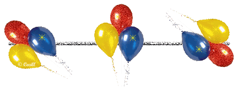

Liyan Peng
Phone: +1 646-785-1401
LinkedIn: click here
Email: lp2740@tc.columbia.edu
EDUCATION
Teachers College, Columbia University
New York, NY
Expected 05/2019
- Master of Arts in Instructional Technology & Media
- GPA: 4.00/4.00 | Awards: Teachers College Scholarship
- Courses: Feature Engineering Studio; Learning Analytics: Process & Theory; Virtual, Augmented, Mixed Reality Learning; Introduction to Education Technology & Learning Sciences
- Course Assistant: Objected-Oriented Programming & Theory
Beijing Normal University
Beijing, China
07/2017
- Bachelor of Science in Chemistry, Minor in Pedagogy
- GPA: 3.82/4.00 (5%) | GRE: 330 | Awards: First-Class Professional Scholarship, Social Work Scholarship
- Courses: Advanced Mathematics, Basic Physics, C Language
PROFESSIONAL EXPERIENCE
SKILLS AND CERTIFICATES